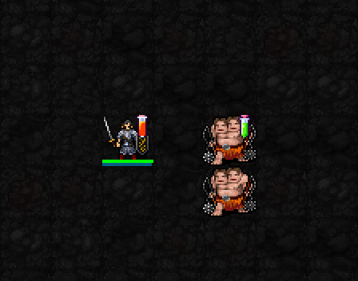
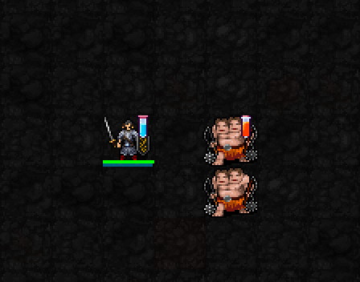
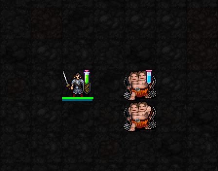

폭발 반응
독성 표식 + 발열 주문
대상과 주변 1칸의 적에게 화염 피해. I=12: ⌊2d8 × 0.85⌋.

표식 준비 → 주문 적중·반응 → 표식 소모
공격 주문 사거리 +1 · 다른 시약이 만나면 자동 반응
해금: 신앙 ★★★(75) · 최소 기도술 제한 없음 · 별도 버튼·추가 MP/신앙 소모 없음.
원래 주문의 MP는 그대로 소모합니다. 사거리는 시야를 넘지 않으며 폭발 범위는 늘지 않습니다. 자신 대상·인접 전용·일부 고정 범위 주문은 제외됩니다.
캐릭터 옆 시험관 = 이번 주문에 실릴 시약 / 몹 옆 시험관 = 남아 있는 표식.
노란 바닥 테두리 = 반응 범위. 주변 8칸에도 작은 폭발·점액 이펙트가 동시에 터집니다. 폭발·점액은 3×3(주변 1칸), 열충격은 대상 한 칸입니다. 반응 순간에만 표시되며 지속 장판이 아닙니다.
서로 다른 시약이 반응하면 기존 표식을 소모합니다. 조합은 순서와 관계없이 같습니다.
독성 표식 + 발열 주문
대상과 주변 1칸의 적에게 화염 피해. I=12: ⌊2d8 × 0.85⌋.

표식 준비 → 주문 적중·반응 → 표식 소모
발열 표식 + 냉각 주문
대상 한 명에게 물리 피해. I=12: ⌊3d9 × 0.85⌋, AC를 절반만 적용.

표식 준비 → 주문 적중·반응 → 표식 소모
냉각 표식 + 독성 주문
대상과 주변 1칸의 적에게 피해 + 3턴간 이동 시간 35% 증가. I=12: ⌊2d5 × 0.85⌋.

표식 준비 → 주문 적중·반응 → 표식 소모
반응 피해는 기존 초안에서 15% 줄인 수치(×0.85)입니다.
폭발: ⌊2d(5+⌊I/4⌋) × 0.85⌋ · 열충격: ⌊3d(6+⌊I/4⌋) × 0.85⌋ · 점액: ⌊2d(3+⌊I/6⌋) × 0.85⌋.
I는 기도술. 피해식은 저항·방어 적용 전입니다. 한 주문당 반응 중심은 최대 한 곳이며, 광역 주문의 나머지 대상에는 단일 시약이 붙습니다. 주변 피해는 적에게만 적용되고 벽을 통과하지 않습니다.
점액은 이동만 늦추며 공격·주문 시전 속도는 그대로입니다.
영상: 실제 게임 엔진에서 신앙 90·기도술 12, 기존 표식을 준비한 뒤 일반 마법의 다트(MP1)로 반응을 일으킨 장면입니다. 두 번째 몹으로 광역/단일 대상 차이를 보여줍니다. 시험 장면은 독립 실행이며 반응 첫 발견 시 신앙 보상을 받을 수 있습니다.